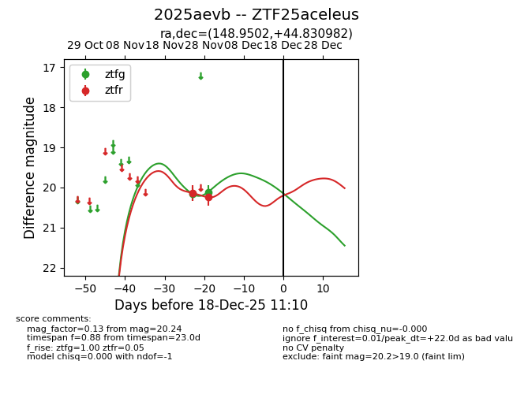
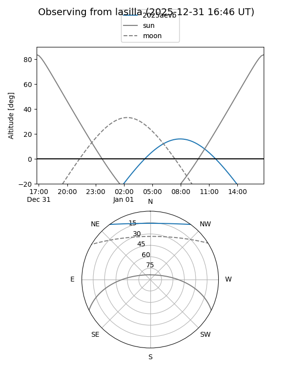
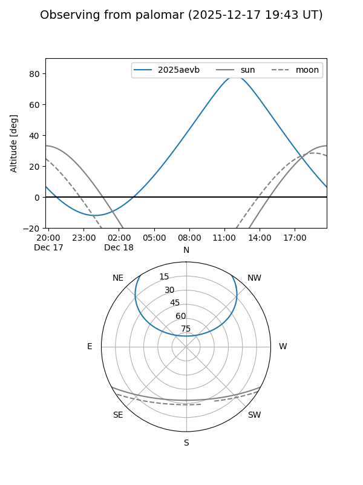
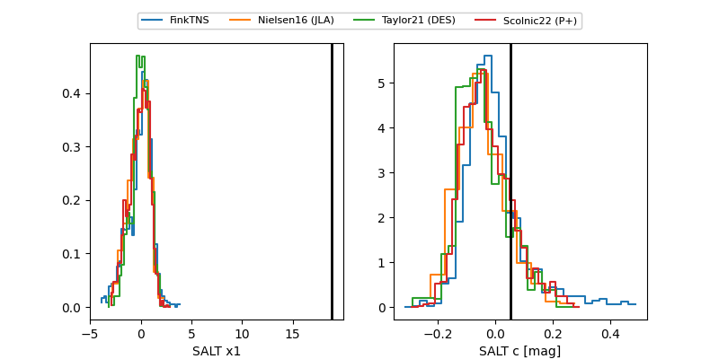

2025aevb
Target 2025aevb at 2025-12-31 17:59
Aliases and brokers:
FINK: link
Lasair: link
ALeRCE: link
TNS: link
YSE: link
alt names
ZTF25aceleus (ztf,fink_ztf)
2025aevb (tns,yse)
Coordinates:
equatorial (ra, dec) = 148.9502,+44.83098
equatorial (HMS+DMS) = 09:55:48.06,+44:49:51.54
galactic (l, b) = (174.2002,+50.91364)
Flags:
Photometry:
last ztfg=20.11, ztfr=20.24
2 ztfg, 2 ztfr detections
Lightcurve

Visibility


Additional plots
